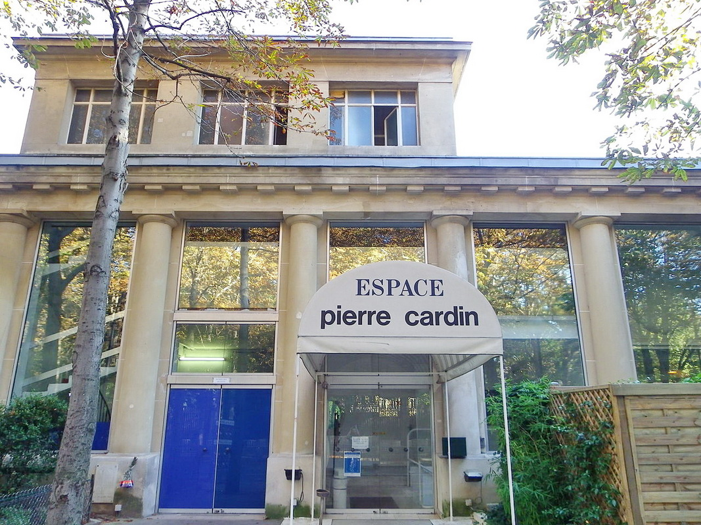
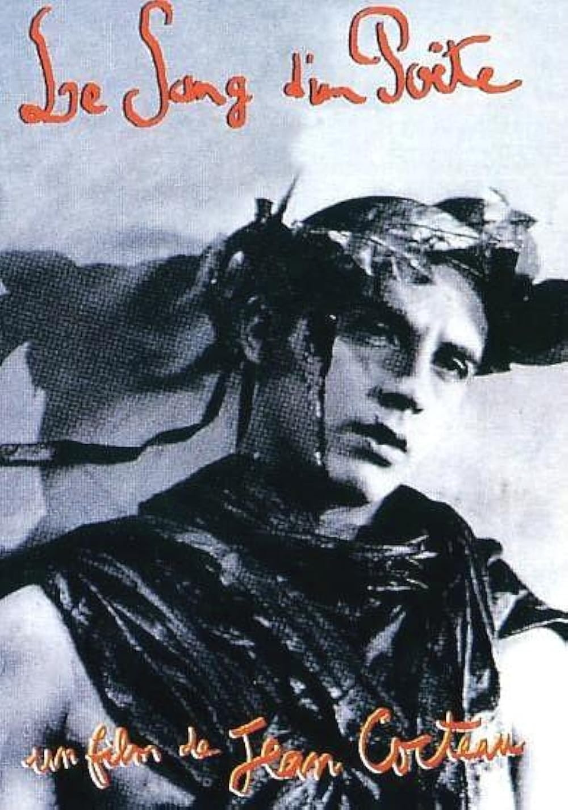

La présence de Jean Cocteau s'est imposée à moi grâce à un faisceau de convergences.
Il m'a semblé évident que le théâtre des Ambassadeurs et le Bataclan présentaient de nombreuses similitudes.
Les deux théâtres sont des lieux culturels emblématiques chargés d'histoire. Leur architecture, transformée, rénovée,
s'adapte parfaitement aux tendances culturelles de leur époque. Ils ont su s'adapter à une multitude de spectacles :
café-concert, music-hall, jazz, rock, funk, zouk, rap, etc., restauration, expositions, théâtre, souvent à l'avant-garde
au point de provoquer la colère des conservateurs intégristes de leur époque. Ainsi Cocteau, en 1938, fut déjà accusé
par des extrémistes de corrompre la jeunesse avec sa pièce Les Parents terribles créée aux Ambassadeurs.
C'était bien avant qu'en 2024 le « théâtre des Ambassadeurs » ne devienne le « théâtre de la Concorde »,
une dizaine d'années après que d'autres extrémistes ne provoquent un carnage au Bataclan.
Laissons parler le poète Cocteau, lui qui affirmait que la poésie est une langue à part qui permet à tous les poètes
du monde de se comprendre entre eux. N'hésitons pas, en tant qu'« ambassadeurs de la concorde », à nous inviter à la conversation.

Le théâtre des Ambassadeurs Espace Pierre Cardin puis théâtre de la Concorde

Blood of a Poet Film réalisé par Cocteau en 1932
Ce qui ne peut se dire (et cependant
que ne puis-je dire avec
ma façon de forcer les mots
à se taire) ce qui ne peut
se dire c'est le miel
des abeilles à l'agonie. Il
coule de la rûche il ligote
d'une infecte résille vertigineuse
les profils perdus à la base
d'un caducée. On devine
fait de quoi.
Cela déchira d'est en ouest
l'étoffe du silence. On entendit
le silence crier de telle
sorte que ce fut insupportable
aux oreilles du cœur. Une
gerbe d'encre à coup sûr
pleine de chefs-d'œuvre
éclaboussant un vol noir
de papiers compromettants brûlés en hâte.
Tandis qu'une pluie torrentielle
de baïonnettes
achevait sauvagement les victimes
Portrait de Cocteau Amedeo Modigliani, 1916, Princeton
A genoux à droite
et à gauche. Seul hélas
de mon espèce (il n'y a pas de quoi
être fier) sous une cotte
de mailles faite en chiffres sous
une armure de vacarme
seul à genoux à gauche
à droite — la neige aux mains d'aveugle
mettant la nappe — je ferme
à genoux seul de mon espèce
hélas dans cette chambre où le crime
eut lieu la bouche
jaune de ma savante
blessure capable
de prononcer quelques mots.
Souvenir amical Dessin de Jean Cocteau 1948
On ne résume pas les vers d'un poète. De ces trois strophes extraites de La Crucifixion (1946)
il est aisé de déceler la part prophétique. Comme Rimbaud, le poète Cocteau se fait voyant.
Il appréhende la réalité du martyre depuis le Golgotha jusqu'aux camps d'extermination nazis, proches du temps de l'écriture.
La nature universelle de l'art poétique — partagée d'ailleurs avec la musique — permet de franchir les limites de la mémoire
et d'englober dans ces visions des temps anciens la vérité de tous les martyres. Comment ne pas reconnaître la cruauté du 13 novembre
dans « cette chambre où le crime eut lieu » et où « le silence insupportable a crié » — et continue de crier — aux oreilles du cœur » ? Serai-je, moi aussi, le seul de mon espèce » à tenter de dire mon effroi, mon dégoût, mais aussi mon empathie et ma volonté de résister à la pluie torrentielle des baïonnettes », sous cette armure de vacarme » ?